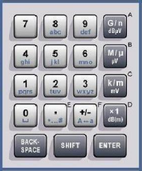

Data Entry Keys
The keys in the data entry keypad are used to enter numeric values and character data. They are only enabled while the cursor is placed in a data input field.

- 0 to 9 – enter numbers (in numeric input fields) or characters (character input fields)
- . and ±:
– In numeric input fields, the keys enter the decimal point and change the sign of the entered numeric value. Multiple decimal points are not allowed. – In hexadecimal input fields, the keys enter the hex values E and F. – In character input fields, the keys enter special characters and switch between upper and lower case, respectively. - G/n, M/µ, k/m, x1:
– In numeric input fields, these keys multiply the entered value with factors of 10(-)9, 10(-)6, 10(-)3 or 1 and add the appropriate physical unit. – In hexadecimal input fields, the keys enter the hex values A to D. – In character input fields, the keys have no effect. - BACKSPACE – deletes the last character before the cursor position or the selected character sequence.
- SHIFT – for future extensions
- ENTER – activates the edit mode for the selected input field or confirms and terminates the entry.